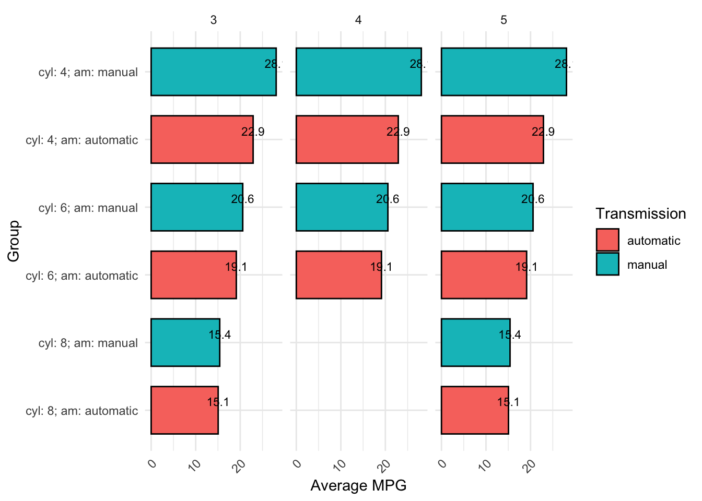
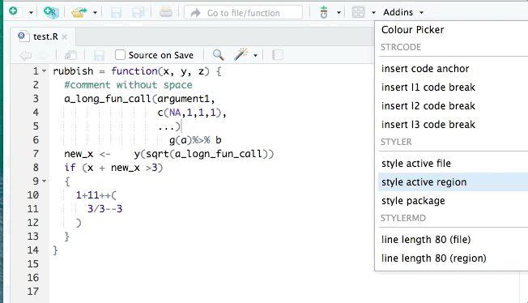

Code
install.packages(tidyverse) # umbrella package that installs dplyr/tidyr/ggplot2 and others
install.packages(janitor)
install.packages(report)
install.packages(parameters)
install.packages(knitr)
install.packages(kableExtra)This is an understandable point of confusion, so let’s clarify:
There is a long-standing debate about whether base R (alone) or R+{tidyverse} is better. Thankfully, I can resolve this question for you immediately: R+{tidyverse} is better. All hail the One True Language, {tidyverse}.
A script is a text file that contains R code that can be re-run. Technically, you can type R code directly into the RStudio ‘Console’ and run it from there. But that would be incredibly difficult, and we want reproducible code that can be rerun, modified, and shared, so we save them in scripts. There are multiple types of scripts, including .R files (R code and comments only) as well as RMarkdown (.Rmd) and Quarto files (.qmd), which can contain code, text, plots, tables, and data. We cover these more in a later chapter on Reproducible Reports.
The RStudio interface allows you to view and write code, as well as objects that are loaded and modified by your code such as datasets. Like code scripts, datasets are also stored locally on your machine, such as in .csv and .xlsx files.
Note that you can also have text-only markdown files (.md). These can contain text and markdown formatting (e.g., bold, italics, levels of heading, etc) but not executable code. ‘Readme’ files for projects are often saved as “README.md”. .md files can be opened and edited in RStudio and also other markdown editors such as typora.io. You may need to tell your computer how to open .md file (e.g., right click>‘open with’>RStudio).
Get familiar with the different parts of the RStudio IDE user interface with this cheat-sheet, which you can also download as a pdf here.

You can view a .qmd file’s raw code in the ‘Source’ viewer. The button for this appears on the top left above the code in RStudio.
Screenshot of Source editor mode:

You can also view the a live preview of the rendered file, including tables, plots, math, etc., using ‘Visual’ editor mode, although there will some simplifications compared to when you render a .html file. We’ll cover rendering in a later chapter.
Screenshot of Visual editor mode:

Once you have learned about some of the concepts mentioned below in later chapters, it can be useful to come back to these cheat-sheets to learn the keyboard shortcuts for them.

Windows
%>%): shift + Ctrl + MMac
%>%): shift + Cmd + MYou can also change or set up additional keyboard shortcuts in the “Tools>Modify keyboard shortcuts” drop down menu. For example, I have modified the shortcut to switch between Source viewer vs. Visual viewer to be “Cmd + `”.
Of the above, multi-line typing is the one that reliably gets an audible ‘whoa’ from audiences. It’s easier to see than explain:

When you get a bit more experienced with RStudio, I highly recommend you check out this blog post on shortcuts to know about more advanced features such as Function/Variable Extraction, Renaming in Scope, Code Snippets, and advanced search and find-and-replace.
Base R includes a powerful core of many useful functions, but it doesn’t include every tool you might need. To do specialized tasks you can install ‘packages’ that contain other functions and documentation to help you understand them. Once your code makes use of another package, it ‘depends’ on that that package for the code to run, so we say that the package is a ‘dependency’ for that script. Packages that can
Install packages from the most common database of R packages, CRAN, with install.packages(). Each package only needs to be installed once for it to be present on your computer, not every time the script runs.
In your local version of this .qmd script, highlight and run the code below to install these packages.
install.packages(tidyverse) # umbrella package that installs dplyr/tidyr/ggplot2 and others
install.packages(janitor)
install.packages(report)
install.packages(parameters)
install.packages(knitr)
install.packages(kableExtra)Some packages are instead on GitHub, and can be installed with devtools::install_github(). You’ll need to install the {devtools} package first to be able to use the install_github() function.
In your local version of this .qmd script, highlight and run the code below to install these packages.
install.packages(devtools)
devtools::install_github("ianhussey/psychdsish") # username/repository
devtools::install_github("ianhussey/truffle") # username/repositoryDependencies, i.e., packages that your code requires to run, can be loaded with library(). For tidiness, these should usually all be loaded at the start of your script. Some chapters in this book load libraries only when they’re used in order to make it clear which functions come from which libraries. Equally, unused libraries should not be loaded.
library(tidyverse) # umbrella package that loads dplyr/tidyr/ggplot2 and othersSome common packages have identically named functions with different syntax. For example, if you load both {dplyr} and {MASS}, use of the function select() can refer to either dplyr::select() or MASS::select(), and your code might not run if the other package is loaded.
You can see if you have two identically named functions loaded by opening the help menu and seeing if more than one entry appears (e.g. with ?select()).
Avoid this by loading only the packages you need. Debug errors by thinking about these common namespace collisions:
| Function | tidyverse Source | Conflicting Package(s) | Notes |
|---|---|---|---|
| filter | dplyr | stats | stats::filter() is for signal processing (time series) |
| lag | dplyr | stats | Different semantics: dplyr::lag() is simpler |
| select | dplyr | MASS | MASS::select() is for step-wise regression |
| slice | dplyr | IRanges / S4Vectors | Common in Bioconductor workflows |
| rename | dplyr | MASS | MASS::rename() is deprecated, but may still load |
| summarise | dplyr | Hmisc | Hmisc::summarize() differs in behavior |
| intersect | dplyr | base | dplyr re-exports base::intersect() |
| union | dplyr | base | dplyr re-exports base::union() |
| setdiff | dplyr | base | dplyr re-exports base::setdiff() |
| count | dplyr | plyr | Different behavior/output in plyr::count() |
| desc | dplyr | IRanges | Conflicts with IRanges sorting |
| mutate | dplyr | plyr | Conflicts common when plyr is loaded |
| arrange | dplyr | plyr | Subtle differences; dplyr preferred |
Solve this issue either by specifying which package should be used each time you use the function (e.g., dplyr::select() instead of select()) or by specifying below your library() calls which version is preferred:
library(conflicted)
conflict_prefer(name = "select", winner = "dplyr")[conflicted] Will prefer dplyr::select over any other package.R/RStudio has access to your computers files, but it only does exactly what you tell it to. If you have a data file (‘data.csv’) on your computer that you want to analyze in R, you have to first tell R to load that file. We will come back to this in the chapter on Loading Data.
Loading data from files is just one form of assignment: instructing R to create and set an ‘object’ to a given value or set of values, such as the contents of a file. This can also be much simpler, such as setting the variable name to “Ian”: name <- "Ian".
Assignment of objects is done via <- by convention.
# set the variable x to be the number 5
x <- 5
# print the contents of x
x[1] 5Technically you can also use =, but it’s best to avoid it.
# set the variable y to be the string "hello"
y = "hello"
# print the contents of y
y[1] "hello"It’s somewhat less well known, but you can also do “right-assignment” (->) instead of the much more common left assignment (<-). You should also avoid this.
# set the variable y to be the string "really? yes."
"really? yes." -> z
# print the contents of z
z[1] "really? yes."At this point, many books talk about objects, data types, and data structures. Personally, I find these to be too abstract for many users. They make more sense once you have some experience with data transformation. If you want to learn about them, here are some external resources from intro2r.com.
Code can be written many different ways and still run. For example, both of the below code chunks run successfully and produce the same plot. Even without knowing how to read or write this code yet, it should be clear that the first one is much harder to read than the second due to inconsistent formatting and lack of comments:
library(dplyr)
library(ggplot2)
library(stringr)
mtcars %>% mutate(am=ifelse(am==1,
"manual","automatic"),gear=factor(
gear
))%>%
group_by(
cyl,am)%>%
summarise(avg_mpg=mean(mpg,na.rm=TRUE),
med_hp=median(hp),
count=n(),
.groups="drop"
)%>%
filter(avg_mpg>18|med_hp>100)%>%
mutate(flag=ifelse(avg_mpg>20&med_hp>110,TRUE,
FALSE),hp_per_cyl=med_hp/cyl)%>%arrange(desc(avg_mpg))%>%
left_join(
mtcars%>%count(cyl, gear),by="cyl" )%>%
mutate(label=str_c("cyl: ",cyl,"; am: ",am))%>%
ggplot(aes(x=reorder(
label,
avg_mpg
),y=avg_mpg,fill=
am))+geom_col(width = 0.7,
color = "black")+geom_text( aes( label = round(avg_mpg,1)),vjust = -0.5,size = 3)+
facet_wrap(~gear,scales="free_x")+theme_minimal(
)+theme(
axis.text.x=element_text(angle=45,hjust=1)
)+labs(
x="Group",y="Average MPG")+
guides(fill=guide_legend(title="Transmission"))+coord_flip()
library(dplyr)
library(ggplot2)
library(stringr)
# take the 'mtcars' dataset
mtcars %>%
# convert some of the existing data columns
mutate(am = ifelse(am == 1, "manual", "automatic"),
gear = factor(gear)) %>%
# create summaries
group_by(cyl, am) %>%
summarise(avg_mpg = mean(mpg, na.rm = TRUE),
med_hp = median(hp),
count = n(),
.groups = "drop") %>%
# retain only some rows
filter(avg_mpg > 18 | med_hp > 100) %>%
# create categories and ratios
mutate(flag = ifelse(avg_mpg > 20 & med_hp > 110, TRUE, FALSE),
hp_per_cyl = med_hp / cyl) %>%
# rank the rows
arrange(desc(avg_mpg)) %>%
# join in more columns from the original data set
left_join(mtcars %>% count(cyl, gear), by = "cyl") %>%
# annotate some variables
mutate(label = str_c("cyl: ", cyl, "; am: ", am)) %>%
# create plot
ggplot(aes(x = reorder(label, avg_mpg), y = avg_mpg, fill = am)) +
geom_col(width = 0.7, color = "black") +
geom_text(aes(label = round(avg_mpg, 1)), vjust = -0.5, size = 3) +
# create subplots
facet_wrap(~gear, scales = "free_x") +
# add plot theme
theme_minimal() +
theme(axis.text.x = element_text(angle = 45, hjust = 1)) +
labs(x = "Group", y = "Average MPG") +
guides(fill = guide_legend(title = "Transmission")) +
coord_flip()General guidelines for how to style code are laid out in ‘style guides’, such as the Tidyverse Style Guide. These are conventions rather than strict rules.
More importantly, there are R packages that will re-style your code to be compliant with the Tidyverse Style Guide. They don’t work perfectly if your code starts out as particularly poorly formatted, but they help.
Install the {styler} R package:
install.packages("styler")
library(styler)You can then restyle any code you’ve written by highlighting the code (click+drag) and clicking “Addins”>“STYLER”>“Style selection”. Or style the whole file with “Style active file”.

Edit your local copy of this .qmd file to make the following changes. If you’re reading this as an eBook on the website, create a new .R file in RStudio on your computer (‘File>New File>R script’). Copy and paste the code below into that file.
Restyle the code with the Styler Addin.
You can undo this with Ctrl + z (Windows) or Cmd + z (Mac) if you want to see it before/after again.
library(styler)
library(dplyr)
library(ggplot2)
library(stringr)
mtcars %>% mutate(am=ifelse(am==1,
"manual","automatic"),gear=factor(
gear
))%>%
group_by(
cyl,am)%>%
summarise(avg_mpg=mean(mpg,na.rm=TRUE),
med_hp=median(hp),
count=n(),
.groups="drop"
)%>%
filter(avg_mpg>18|med_hp>100)%>%
mutate(flag=ifelse(avg_mpg>20&med_hp>110,TRUE,
FALSE),hp_per_cyl=med_hp/cyl)%>%arrange(desc(avg_mpg))%>%
left_join(
mtcars%>%count(cyl, gear),by="cyl" )%>%
mutate(label=str_c("cyl: ",cyl,"; am: ",am))%>%
ggplot(aes(x=reorder(
label,
avg_mpg
),y=avg_mpg,fill=
am))+geom_col(width = 0.7,
color = "black")+geom_text( aes( label = round(avg_mpg,1)),vjust = -0.5,size = 3)+
facet_wrap(~gear,scales="free_x")+theme_minimal(
)+theme(
axis.text.x=element_text(angle=45,hjust=1)
)+labs(
x="Group",y="Average MPG")+
guides(fill=guide_legend(title="Transmission"))+coord_flip()
2.8 Comments
Comments in R start with the hash symbol
#. Everything to the right of#on a line of code is ignored by R when the code is run.Comments are used to explain what the code does or leave reminders for future readers, including yourself.
Good comments explain to the reader why this code exists rather than explaining what it does or how. Sometimes, particularly complex code can benefit from explanations of how it works. More often, the code itself can be figured out, but not why it is needed at all. Convey why the code exists with your comments. For example,
# remove outliersis a good comment that tells you the ‘why’ of the code without getting in to ‘how’, which the code itself should explain.Code